Learning Objectives
Click each box as you master the topic:
Sensation Disorder Terminology
-esthesia = sensation | -algesia = pain | -osmia = smell | -geusia = taste
hypo- = decreased | hyper- = increased | an-/a- = absent | para- = abnormal | dys- = bad/unpleasant | phanto- = phantom (no stimulus)
| Category | Term | Definition | How the Patient Describes It |
|---|---|---|---|
| Decreased / Absent Sensation | Anesthesia | Complete loss of sensation | "Numb" |
| Hypoesthesia | Reduced sensation | "Less feeling" | |
| Hypoalgesia | Reduced pain perception | Blunted pain | |
| Anosmia | Loss of smell | "Cannot smell" | |
| Ageusia | Loss of taste | "Cannot taste" | |
| Increased Sensation | Hyperesthesia | Increased sensitivity | "Everything feels heightened" |
| Hyperalgesia | Increased pain to a painful stimulus | "More painful than expected" | |
| Abnormal Non-Painful Sensation | Paresthesia | Abnormal sensation, not unpleasant | Tingling, pins/needles |
| Dysesthesia | Unpleasant abnormal sensation | Burning, raw, uncomfortable | |
| Formication | Sensation of insects crawling | "Bugs crawling" | |
| Parosmia | Distorted smell | "Smells wrong" | |
| Phantosmia | Smell without any stimulus | "Smelling something not there" | |
| Parageusia / Dysgeusia | Distorted taste | Metallic, bitter | |
| Pain with Abnormal Processing | Allodynia | Pain from a non-painful stimulus | "Light touch hurts" |
| Hyperpathia | Exaggerated, explosive pain response | Delayed, intense pain |
Allodynia vs Hyperalgesia: Allodynia = pain from something that shouldn't hurt at all (light touch on skin). Hyperalgesia = extra pain from something that should only hurt a little (mild pinch feels like stabbing).
Parosmia vs Phantosmia: Parosmia = there IS a real smell, but your brain distorts it ("coffee smells like sewage"). Phantosmia = there is NO smell at all, but your brain creates one from nothing.
Burning Mouth Syndrome (BMS)
A 58-year-old postmenopausal woman
- CC: 5-month history of burning pain on her tongue
- She says it feels like she "scalded her tongue on hot coffee" but the pain never goes away
- She's seen three dentists who found nothing wrong
- Her oral mucosa appears completely normal on your exam
Key distinction for your differential:
- Sensation = somatosensory (pain, temperature, touch)
- Special sensations = taste, smell, salivary perception
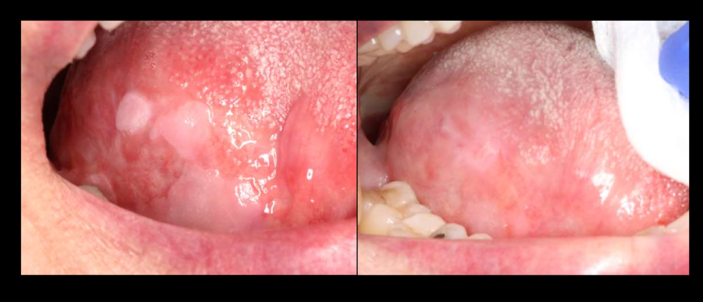
Definition: Oral Dysesthesia / BMS
BMS is formally defined as:
- An intraoral burning or dysesthetic sensation
- Recurring daily for >2 hours per day for >3 months
- Without clinically evident causative lesions
Key Features
- Normal clinical examination — you look in the mouth and see nothing wrong
- No visible mucosal pathology
- Diagnosis of exclusion — you must rule out everything else first
References: Currie CC et al. (2021). J Oral Rehabil. 48(2): 147–155. Jääskeläinen SK (2018). Pain. 159(4): 610–613.
Clinical Presentation
The Classic Triad
- Burning pain: tongue, lips, anterior hard palate
- Dysgeusia: altered taste, often metallic or bitter
- Xerostomia: subjective dry mouth with normal salivary flow
Characteristic Pattern High Yield
- Symptoms worsen during the day (worst in evening)
- Pain does NOT wake patient from sleep
- Often relieved temporarily by eating/drinking
Demographics
- Postmenopausal women (5 females : 1 male)
- Age: typically 50–70 years
- General population prevalence: ~1–3%
Ref: Ritchie A, Kramer JM (2018). J Dent Res. 97(11): 1193–1199.
Diagnosis of Exclusion: Rule Out Secondary Causes FIRST
Local Factors
- Oral candidiasis (even subtle)
- Lichen planus, lichenoid reactions
- Geographic tongue
- Contact allergies (dental materials, flavorings, cinnamon)
- Xerostomia with true hyposalivation
Systemic Factors
- Nutritional deficiencies: B12, folate, iron, zinc
- Medications: ACE inhibitors, ARBs, antidepressants, antihistamines
- Endocrine: Diabetes, hypothyroidism
- Autoimmune: Sjögren syndrome
Required Workup
- Complete oral exam
- Labs: CBC, comprehensive metabolic panel, B12, folate, iron studies, zinc, TSH, HbA1c
- Consider: Candida culture, patch testing if indicated
Ref: Ritchie A, Kramer JM (2018). J Dent Res. 97(11): 1193–1199.
Neuropathic Mechanisms of BMS
Peripheral Level
- Small fiber damage (Aδ taste afferents, C-fibers)
- Detected by: thermal QST, epithelial nerve fiber density ↓
- Abnormal electrogustatometry
Central Level
- Striatal dopamine dysfunction
- Deficient CNS pain inhibition
- Altered brain activation to thermal stimuli
Peripheral = the "wires" (small nerve fibers in the tongue mucosa) are physically damaged. The tiny nerves that carry taste and pain signals have fewer fibers than normal. This is detectable: you can biopsy the tongue and literally count the nerve fibers under a microscope — BMS patients have fewer.
Central = the "switchboard" (the brain itself) is malfunctioning. The brain's dopamine system (which normally helps filter/suppress pain signals) isn't working right, so even normal signals get amplified into perceived burning. This is the same dopamine pathway involved in Parkinson's disease, which is why BMS and Parkinson's share some neurological overlap.
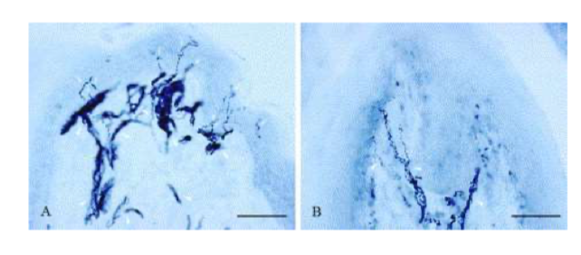
Refs: Jääskeläinen SK (2018). Pain. 159(4): 610–613. Lauria G et al. (2005). Pain. 115(3): 332–337.
Peripheral vs. Central Subtypes of Oral Dysesthesia
| Feature | Peripheral Subtype | Central Subtype |
|---|---|---|
| Prevalence | 50–65% of cases | 20–40% of cases |
| Mechanism | Small fiber neuropathy in oral mucosa | Striatal dopamine dysfunction, deficient CNS inhibition |
| Detection | Thermal QST, epithelial nerve fiber density, electrogustatometry | PET scan (dopamine), fMRI, brainstem reflex testing |
| Psychiatric comorbidity | Less common | Common (depression, anxiety) |
| Response to local treatment | YES — responds to topical clonazepam, lidocaine blocks | NO — does not respond to local treatments |
| Treatment approach | Topical therapies first-line | Systemic therapies required |
Refs: Jääskeläinen SK (2018). Pain. 159(4): 610–613. Jääskeläinen SK, Woda A (2017). Cephalalgia. 37(7): 627–647. Jääskeläinen SK (2012). Clin Neurophysiol. 123(1): 71–77.
Management of BMS
1. Education & Therapeutic Interaction
- True spontaneous symptom resolution is rare — be honest with the patient
- Psychological adaptation provides symptom improvement — over time, the brain can learn to "turn down" the signal
- Therapeutic interaction itself is treatment — just being heard and validated helps these patients enormously. Many have been dismissed by multiple providers.
2. Nerve Distraction
- Physical barriers: thermoplastic occlusal appliance (like a bleach tray) worn over the teeth — gives the tongue something different to feel
- Oral tactile stimulation: sugar-free candies or gum — keeps the mouth "busy" with real sensation
- Attention redirection: exercise, enjoyable activities — divert the brain away from the phantom signal
3. Alpha-Lipoic Acid (ALA)
- Dose: 600 mg daily (or 200 mg TID)
- Mechanism: Antioxidant, neuroprotective, improves mitochondrial function — basically helps repair/protect damaged nerve fibers
- Side effects: Minimal (GI upset, headache, GERD)
4. Topical Clonazepam Best Evidence
- Dose: 0.5–1 mg tablet, dissolve in mouth, swish × 3 minutes, spit out, TID
- Mechanism: GABA-A agonist — reduces peripheral nociceptor excitability. Essentially quiets the overactive pain nerve endings in the tongue.
- Side effects: Minimal (bitter taste, mild sedation if swallowed)
5. Gabapentinoids
- Gabapentin: 300–3600 mg/day (start low, titrate up)
- Pregabalin: 150–600 mg/day
- Mechanism: Voltage-gated calcium channel modulation — blocks the calcium channels that neurons use to transmit pain signals. Works in the central nervous system.
- For central subtype or refractory patients
6. Tricyclic Antidepressants (TCAs)
- Amitriptyline: 10–75 mg qhs (at bedtime)
- Dual benefit: neuropathic pain relief + mood improvement
- Side effects: dry mouth (ironic for a dry-mouth patient), sedation, weight gain
7. Capsaicin Rinses
- Dose: 0.025–0.1% capsaicin oral rinse
- Mechanism: Desensitizes TRPV1 receptors — these are the exact receptors that detect "hot/burning." Capsaicin initially activates them (causing burning), but with repeated use, the receptors become exhausted and stop responding.
- Limitation: Side effects (intense burning sensation initially, dyspepsia) — hard to convince a patient with burning mouth to use something that causes MORE burning first
8. Low-Level Laser Therapy (LLLT)
- Parameters: 808–980 nm wavelength, multiple sessions
- Emerging evidence, well-tolerated
- Requires specialized equipment
- Mechanism is thought to involve photobiomodulation — light energy stimulates cellular repair in damaged nerve fibers
Refs: Ritchie A, Kramer JM (2018). J Dent Res. 97(11): 1193–1199. Rossetti A, Teixeira A, Milhazes N (2025). Clin Oral Investig. 29(1): 1–14. Liu YF et al. (2018). Oral Dis. 24(3): 325–334.
Xerostomia without Hyposalivation
The Paradox: "My Mouth Is Dry" but Saliva Flow Is Normal
Neuropathic Mechanism
- Quantitative sensory testing findings: elevated thermal thresholds, decreased pain perception
- Small-fiber neuropathy pattern — same type of nerve damage as in BMS
- Altered salivary composition (elevated Na, K, Cl, Ca, IgA, amylase) — the saliva is chemically different even though the volume is normal
- Bidirectional relationship between sensory changes and dryness perception
Management — 3-Step Approach
Confirm Normal Salivary Flow
- Perform sialometry (unstimulated AND stimulated)
- Rule out true hyposalivation — if flow is actually reduced, treat the cause (medication change, Sjögren workup, etc.)
Address Neuropathic Component
- Gabapentin
- Pregabalin
- Low-dose tricyclic antidepressants (amitriptyline, nortriptyline)
Manage Contributing Factors
- Medication review — avoid xerogenic drugs if possible
- Screen for anxiety, depression (both can amplify perceived dryness)
Refs: Granot M, Nagler RM (2005). J Pain. 6(9): 593–598. Hwang YJ, Kho HS (2026). J Oral Rehabil. 53(1): 1–10. Kang JH, Kho HS (2021). Arch Oral Biol. 125: 105096. Nagler RM, Hershkovich O (2004). J Pain. 5(1): 56–63.
Sialorrhea (Drooling)
Definition & Classification
Sialorrhea = excess spillage of saliva from the mouth; drooling. Normal saliva production: 0.5–1.5 L/day
Primary (True) Rare
- Actual excess saliva production
- Extremely rare
- Causes: Medications (clozapine, risperidone, lithium), heavy metal poisoning, Wilson disease, GERD (water brash)
Secondary (Perceived) ~90%
- Normal production, impaired clearance
- Poor oromotor control, dysphagia, decreased swallowing
- Saliva "pools" — NOT increased production
Psychogenic
- Normal production + heightened somatic focus
- Normal swallowing
- Compulsive spitting, bringing "evidence" (bottles of saliva), fear of swallowing own saliva
Diagnosis
History
- Medication review (anticholinergics vs. cholinergics)
- Neurological examination (oromotor function, swallowing, cranial nerves)
- Assess for dental malocclusion, poor head control, postural problems
- Psychiatric history — anxiety, health preoccupation, somatic focus
Objective Measurement Tools
| Type | Tool | Details |
|---|---|---|
| True Sialorrhea (quantitative) | Unstimulated Salivary Flow Rate (USFR) | 5-minute collection in preweighed cup. Normal: 0.1 mL/min. GOLD STANDARD. USFR ≤0.2 g/min = significant hyposalivation. |
| Secondary Sialorrhea (subjective scales) | DFSS, DIS, Modified Teacher's Scale, 5-min Drooling Quotient | Observe for visible drooling, perioral skin breakdown. DFSS: 2–9 point. DIS: 10–40 point. |
| Psychogenic Sialorrhea (psychiatric) | Somatic Symptom Disorder Criteria | Disproportionate thoughts about symptom seriousness. Persistently high health anxiety. Excessive time/energy on symptoms. |
Refs: Sauer KS et al. (2023). Neurol Clin. 41(3): 659–676. Plemons JM et al. (2014). J Am Dent Assoc. 145(8): 867–873. Löwe B et al. (2024). Lancet. 403(10431): 1458–1470.
Management by Type
Primary Sialorrhea
- First-line: Anticholinergic trial — Glycopyrrolate 1 mg TID (best efficacy, fewest side effects)
- Second-line: Botulinum toxin injection (IncobotulinumtoxinA, OnabotulinumtoxinA — both FDA-approved). 70% response rate, effects last weeks to months.
- Third-line (refractory): Radiation therapy or surgical options (4-duct ligation, gland excision)
Secondary Sialorrhea
- First-line: Conservative/Behavioral — positioning optimization, oromotor therapy, swallowing therapy. Behavioral interventions most effective with higher cognition.
- Escalation if conservative fails: Glycopyrrolate 1 mg TID or botulinum toxin injection into salivary glands
Psychogenic Sialorrhea Do Not Medicate
- Validate patient's distress while reframing the problem
- Psychoeducation
- CBT: Address catastrophic thinking about saliva; reduce checking/spitting behaviors; exposure to swallowing without spitting
- Treat underlying anxiety, depression
Refs: Sauer KS et al. (2023). Neurol Clin. 41(3): 659–676. Plemons JM et al. (2014). J Am Dent Assoc. 145(8): 867–873. Isaacson SH et al. (2020). JAMA Neurol. 77(4): 461–469.
Dysgeusia & Parageusia
Patient presents with:
- CC: For the past 3 months, everything tastes bitter
- Meds: Lisinopril, metformin, sertraline
- Oral hygiene: meticulous — brushes 5 times a day
- Clinical exam: Unremarkable
What's the FIRST thing you should evaluate? (Answer below in quiz section)
The 95% Rule: It's Usually NOT Taste!
Why Patients Confuse Smell and Taste
Flavor (what patients experience as "taste") is actually composed of:
- Taste (tongue receptors): only salty, sweet, sour, bitter, umami, and the 6th modality: oleogustus (fat)
- Smell (olfactory system): thousands of different odors — this is where most of "flavor" actually comes from
- Texture and Temperature
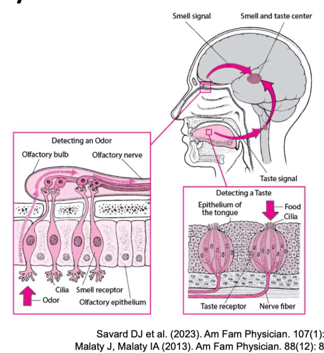
Refs: Savard DJ et al. (2023). Am Fam Physician. 107(1): 50–58. Malaty J, Malaty IA (2013). Am Fam Physician. 88(12): 852–859.
What Causes True Dysgeusia in Dental Patients?
| Cause | Details | Mechanism |
|---|---|---|
| Poor Oral Hygiene & Infection Most Common | Gingivitis, periodontal disease, oral candidiasis (metallic/salty taste), oral abscess, viral URI (COVID-19) | Direct contamination of taste receptors |
| Medications Very Common | ACE inhibitors (lisinopril, enalapril), ARBs (losartan), CCBs (amlodipine), antibiotics (metronidazole, clarithromycin, fluoroquinolones), antidepressants, anticonvulsants, chemotherapy (45–84%) | Direct: taste receptor damage/dysfunction, zinc depletion or chelation. Indirect: hyposalivation. |
| Hyposalivation | Any cause of reduced saliva flow | Reduces tastant dissolution and transport to receptors |
| Nutritional Deficiencies | Vitamin B12, folate, copper, zinc | Impaired taste receptor turnover |
| Post-Surgical | Third molar extraction, middle ear surgery | Chorda tympani nerve injury (carries taste from anterior 2/3 of tongue) |
| Head & Neck Radiation | Radiation to H&N region | Taste bud destruction, salivary gland damage |
Refs: Savard DJ et al. (2023). Am Fam Physician. 107(1): 50–58. Glick A, Sista V, Johnson C (2020). Am Fam Physician. 101(10): 613–620. Rademacher WMH et al. (2020). Oral Dis. 26(2): 213–223.
Management of Dysgeusia
- Identify and treat underlying cause:
- Medication adjustment (coordinate with prescriber)
- Treat oral infections (candidiasis, gingivitis, periodontitis)
- Chlorhexidine rinse — short-term only! Long-term use itself causes dysgeusia
- Nutritional supplementation if deficient
- Improve oral hygiene
- Zinc Supplementation: Zinc sulfate 220 mg daily or Zinc gluconate 50 mg daily
- Address Hyposalivation: Sialagogues, sugar-free gum/lozenges. For xerostomia without hyposalivation — saliva substitutes for comfort only (won't improve taste); address the underlying sensory cause.
- Clonazepam: 0.5 mg topical suck-and-spit or systemic. Acts on GABA-A receptors expressed directly on lingual taste bud receptor cells.
- Olfactory Training (for the olfactory component): Systematic exposure to strong odors (rose, lemon, eucalyptus, clove). Twice daily for 3–6 months.
MSG/Glutamate Supplementation Emerging Evidence
Primarily studied in oncology patients with chemotherapy-induced taste changes.
Receptor-Level Mechanism
- MSG maintains expression of the T1R3 taste receptor subunit during chemotherapy
- T1R3 is the SHARED subunit for both umami (T1R1/T1R3) AND sweet (T1R2/T1R3) receptors
- Chemotherapy selectively downregulates T1R3; MSG supplementation suppresses this downregulation
Salivary Reflex
- Umami stimulation enhances gustatory-salivary reflex → increases salivary flow → improves tastant transport to ALL receptors
- May also enhance saltiness perception, allowing reduced sodium intake
Dosing
- 750 mg MSG per 150 g serving of staple food (rice, soups, broths), three times daily
- Alternative: umami-rich foods — parmesan, tomatoes, mushrooms, soy sauce, fish sauce
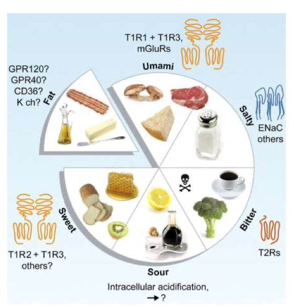
Ref: Chaudhari N, Roper S (2010). J Cell Biol. 191(3): 429.
Central Sensitization
What Is Central Sensitization?
Nociplastic Pain Framework
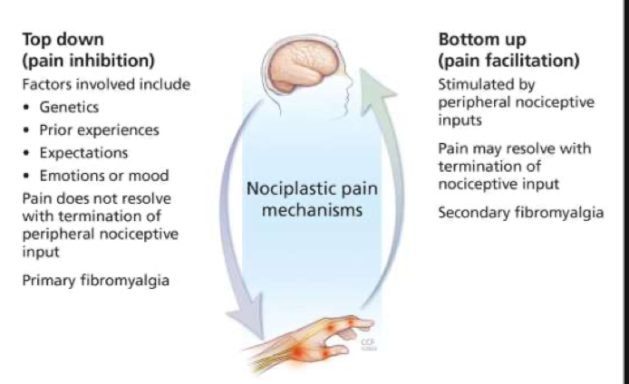
Top-Down: Pain Inhibition
Your brain normally INHIBITS (turns down) pain. Factors involved:
- Genetics
- Prior experiences
- Expectations
- Emotions or mood
When top-down fails: Pain does NOT resolve even when peripheral nociceptive input ends → Primary fibromyalgia
Bottom-Up: Pain Facilitation
Stimulated by peripheral nociceptive inputs that "wind up" the CNS
- Repeated/prolonged nociceptive input
- Nerve injury
- Inflammation
When bottom-up drives it: Pain MAY resolve with termination of nociceptive input → Secondary fibromyalgia
Ref: Woolf CJ (2011). Pain, 152(3 Suppl), S2–S15.
Trigeminal Neuropathy & PTTN
Causes of Trigeminal Neuropathy
| Category | Examples |
|---|---|
| Structural/Compressive | Acoustic schwannoma, metastases, pituitary adenomas |
| Demyelinating & Inflammatory | Multiple Sclerosis, Sjögren syndrome, SLE |
| Trauma & Iatrogenic | Facial trauma, dental procedures, maxillofacial surgery |
| Infectious | Herpes zoster virus |
| Idiopathic | No identifiable cause |
Regional nerve level: tested with nerve block (Step 2 of anesthetic challenge)
Central level: tested by response to systemic (enteral) medication
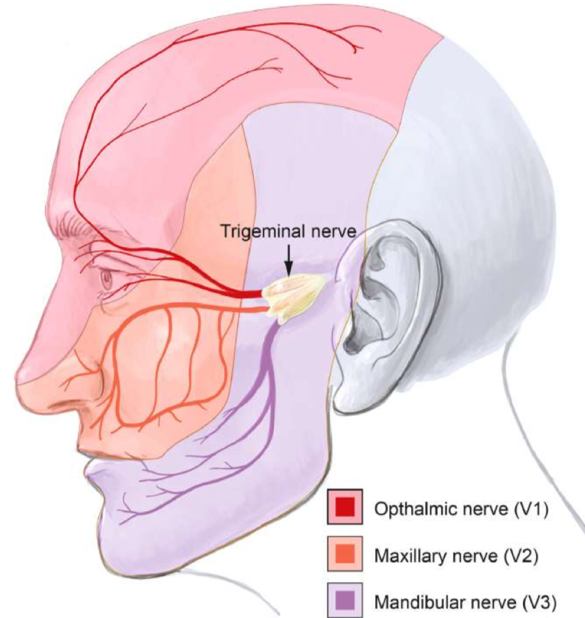
Post-Traumatic Trigeminal Neuropathic Pain (PTTN)
Previously called: Anaesthesia dolorosa; painful post-traumatic trigeminal neuropathy
ICOP Diagnostic Criteria (2020)
- Pain in a neuroanatomically plausible area within the distribution of one or both trigeminal nerves, persisting or recurring for >3 months, fulfilling C and D
- Both of:
- History of a mechanical, thermal, radiation or chemical injury to the peripheral trigeminal nerve(s)
- Diagnostic test confirmation of a lesion of the peripheral trigeminal nerve(s) explaining the pain
- Onset within 6 months after the injury
- Associated with somatosensory symptoms and/or signs in the same neuroanatomically plausible distribution
- Not better accounted for by another ICOP or ICHD-3 diagnosis
Trigeminal Neuropathy vs. Trigeminal Neuralgia
| Feature | Trigeminal Neuropathy | Trigeminal Neuralgia |
|---|---|---|
| Pain character | Constant with flare-ups, burning | Paroxysmal, electric shock-like |
| Duration | Prolonged, continuous | Fraction of a second to 2 minutes |
| Trigger zones | Usually absent | Present (innocuous stimuli), refractory period |
| Sensory findings | ABNORMAL (gain + loss of function) | Usually NORMAL exam |
| History of trauma | YES (by definition for PTTN) | No |
Ref: International Classification of Orofacial Pain (ICOP) (2020). Cephalalgia. 40(2): 129–221.
Workup: Clinical Neurosensory Examination
History
- Temporal relationship to trauma
- Pain quality: burning, aching, constant vs. paroxysmal
- Sensory symptoms: numbness, tingling, "different feeling"
- Functional impact
Examination Tests
| Test | What It Tests | Method |
|---|---|---|
| Light touch | Aβ fibers (large myelinated) | Cotton wisp |
| Pinprick | Aδ fibers (small myelinated) | Sharp vs. dull discrimination |
| Two-point discrimination | Receptor density / cortical representation | Compare affected vs. unaffected side |
| Thermal (cold) | Aδ fibers | Cold stimulus |
| Thermal (warm) | C fibers (unmyelinated) | Warm stimulus |
| Mapping | Extent of altered sensation | Draw the area of altered sensation |
Aβ fibers = the big, fast, insulated wires — carry light touch. Tested with cotton wisp. If damaged → numbness.
Aδ fibers = medium wires — carry sharp pain and cold. Tested with pinprick and cold. If damaged → can't tell sharp from dull, can't feel cold.
C fibers = the small, slow, uninsulated wires — carry dull/burning pain and warmth. Tested with warm stimulus. If damaged → can't feel warmth, burning pain may paradoxically INCREASE (because inhibitory signals are lost).
Always compare the affected side to the normal side. The goal is to map exactly which fiber types are damaged and how big the damaged area is.
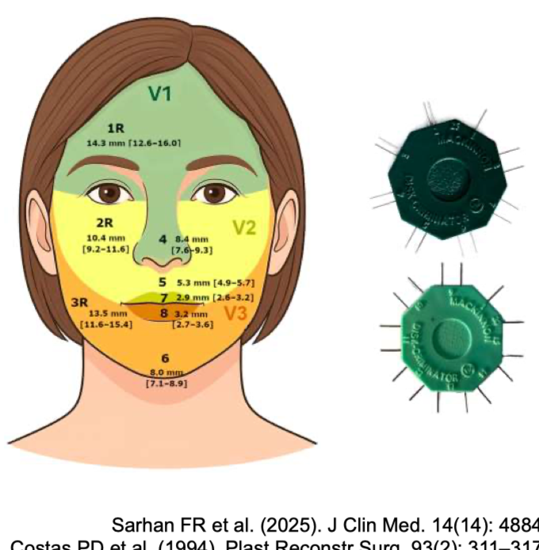
Refs: Sarhan FR et al. (2025). J Clin Med. 14(14): 4884. Costas PD et al. (1994). Plast Reconstr Surg. 93(2): 311–317. Nolan MF (1985). Phys Ther. 65(2): 181–185.
The Anesthetic Challenge: 2-Step Diagnostic Algorithm
This is the systematic way to determine whether the pain generator is peripheral (in the tissue/nerve ending), regional (in the nerve trunk), or central (in the brain/spinal cord) — because the treatment is completely different for each.
Step 1: Topical Anesthetic Challenge
Apply 20% benzocaine or 5% lidocaine to the affected area for 5 minutes. Reassess pain (VAS) at 15–30 minutes.
| Response | Interpretation | Next Step | Treatment |
|---|---|---|---|
| ≥50–70% relief | Peripheral/superficial mechanism dominant | Treat with topicals | Topical agents: Lidocaine 5% ointment, capsaicin cream, compounded topical analgesics |
| ~30% relief (equivocal) | Mixed or deeper peripheral component | Escalate to diagnostic nerve block | Proceed to Step 2 |
| <30% relief | Likely central mechanism | Consider nerve block to confirm, but expect limited response | Proceed to Step 2, prepare for systemic therapy |
Step 2: Diagnostic Nerve Block (if topical equivocal or failed)
IAN block or appropriate regional block with 2% lidocaine. Confirm adequate anesthesia (lip/tongue numbness). Reassess pain.
| Response | Interpretation | Treatment |
|---|---|---|
| ≥70% relief | Peripheral generator confirmed | Therapeutic nerve blocks: LA + steroid series every 6–8 weeks |
| 30–70% relief | Mixed peripheral + central | Combination therapy: Nerve blocks + low-dose centrally-acting medication (TCA or gabapentinoid) |
| <30% relief despite numbness | Central sensitization dominant | Centrally-acting medications: TCAs (amitriptyline), SNRIs (duloxetine), α2δ-ligands (gabapentin/pregabalin) |
Refs: Haroutounian S et al. (2014). Pain. 155(7): 1272–1279. Lawson E et al. (2025). Pain Med. 26(1): 1–15. Cruccu G et al. (2020). N Engl J Med. 383(8): 754–762. Chen YC, Cheng HT (2025). J Pain Res. 18: 1–10. Vlassakov KV et al. (2011). Anesth Analg. 112(3): 726–737.
Self-Injurious Behavior
Categories of Oral Self-Injury
| Category | Examples |
|---|---|
| Neurodevelopmental | Autism spectrum disorder, intellectual disability, genetic syndromes (Lesch-Nyhan, Rett, Cornelia de Lange, Prader-Willi) |
| Neurologic/Hospital | Coma/decerebrate state (loss of masticatory control), seizures/postictal states, encephalitis, stroke, TBI |
| Psychiatric | OCD & BFRBs, delusional infestation (Morgellons), stimulant use disorder, NSSI, factitious disorder |
| Congenital Pain Insensitivity | CIPA (HSAN IV), SCN9A-CIP, HSAN II |
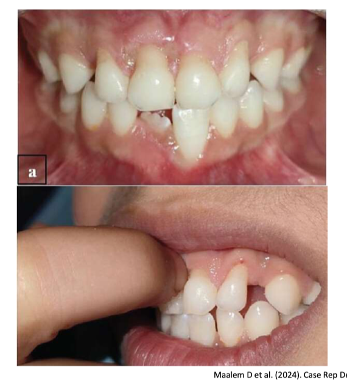
Riga-Fede Disease
Benign traumatic ulceration of oral mucosa from repetitive rubbing against primary teeth in infants.
Typical Presentation
- Healthy infant, 6–15 months old
- Firm, verrucous plaque on ventral tongue
- Coincides with tooth eruption
- Responds to conservative treatment (smoothing tooth edges, protective barriers)
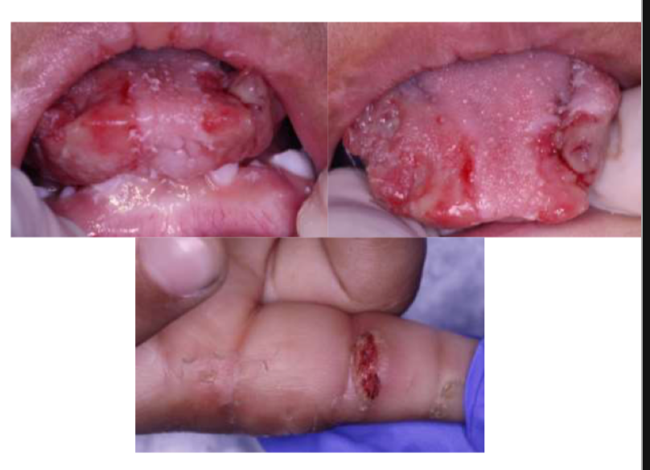
Refs: Lee JJ et al. (2021). Pediatr Emerg Care. 37(12): e1552–e1554. Zaenglein AL et al. (2002). J Am Acad Dermatol. 46(2): 312–315.
Autism Spectrum Disorder & Self-Injurious Behavior
- SIB affects 26–50% of individuals with ASD
- Meta-analysis: pooled prevalence 42%; hand-hitting (23%) most common, self-cutting (3%) least common
The Pain Paradox in ASD Important
- Contrary to popular belief, many individuals with ASD show pain HYPERSENSITIVITY, not indifference
- Pain perception is highly variable — do not assume pain insensitivity
- Variability relates to "perceptual noise" rather than consistently elevated thresholds
Oral Manifestations
- Biting lips, tongue, buccal mucosa, hands
- Self-extraction of teeth
- Mouthing objects causing mucosal trauma
- Higher rates of dental trauma and bruxism (RR 4.23)
Refs: Sarvas E et al. (2024). Pediatrics. 153(2): e2023065123. Steenfeldt-Kristensen C et al. (2020). J Autism Dev Disord. 50(11): 3855–3873. Hoffman T et al. (2023). Pain. 164(5): 1037–1046.
Congenital Insensitivity to Pain
CIPA = Congenital Insensitivity to Pain with Anhidrosis. HSAN = Hereditary Sensory and Autonomic Neuropathy.
| Syndrome | Intellectual Disability | Distinguishing Features |
|---|---|---|
| CIPA / HSAN IV | Yes | Anhidrosis (can't sweat), recurrent fevers, dental anomalies |
| Lesch-Nyhan | Severe developmental delay | Abnormal involuntary movements (dystonia, choreoathetosis) |
| SCN9A-CIP | Normal intelligence | Anosmia (can't smell) |
| HSAN II | Normal intelligence | Distal sensory loss (hands/feet more than face) |
| Familial Dysautonomia (HSAN III) | Normal intelligence | Lack fungiform papillae, GI dysfunction, vomiting crises, recurrent pneumonia, cardiovascular instability |
Oral Manifestations (All Types)
- Tongue/lip self-mutilation beginning with tooth eruption
- Painless oral ulcerations and infections
- Auto-extraction of teeth
- Risk of osteomyelitis (bone infection goes undetected because there's no pain signal)
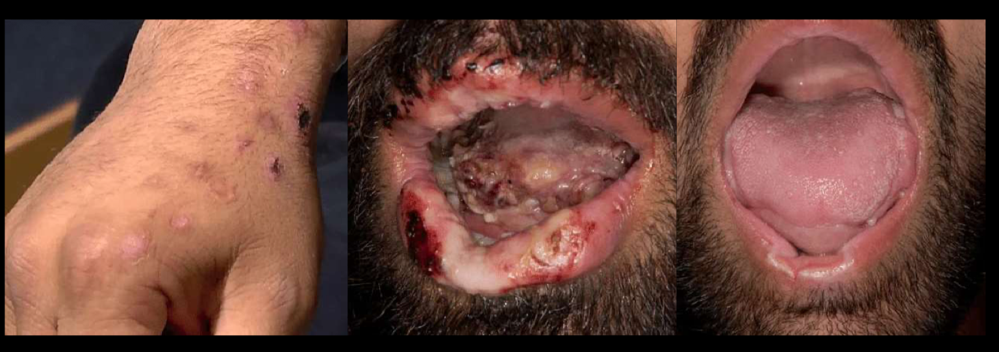
Refs: Kurth I (2021). GeneReviews. HSAN Type II. Schon KR et al. (2020). GeneReviews. Congenital Insensitivity to Pain Overview.
Oral Self-Injury in Altered Consciousness
Mechanism
Comatose and decerebrate patients lose cerebral control of the masticatory cycle, leading to discoordinate chewing movements and self-inflicted oral trauma.
Common Presentations
- Tongue lacerations or ulcerations
- Lip biting with pyogenic granuloma or scar tissue formation
- Bruxism with tooth damage, ETT (endotracheal tube) dislodgement
Associated Conditions
- Encephalitis, intracerebral hemorrhage, TBI, hypoxic-ischemic encephalopathy, acute ischemic stroke
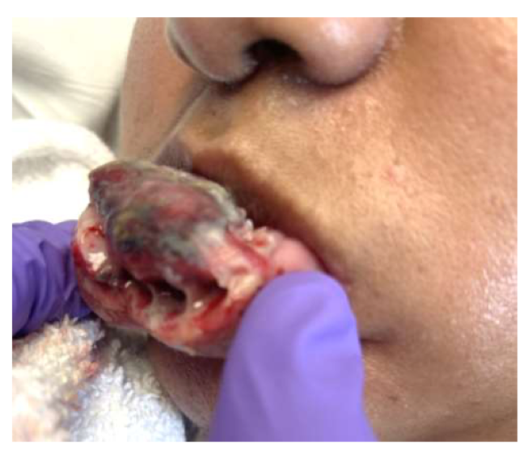
Refs: Hanson GE et al. (1975). Crit Care Med. 3(5): 200–202. Kobayashi T et al. (2005). J Oral Maxillofac Surg. 63(11): 1683–1686. Burke DJ et al. (2021). Curr Pain Headache Rep. 25(3): 18.
Psychiatric Causes of Oral Self-Injury
Delusional Infestation (Ekbom Syndrome) / Morgellons Disease
- Fixed false belief of infestation by pathogens (parasites, fibers, threads)
- Oral manifestations: sensation of hair/threads between teeth, unusual perception of tongue and saliva
- "Matchbox sign": patients bring specimens to appointments (lint, skin flakes, etc. in containers as "proof")
- Prototypical patient: middle-aged woman, often isolated; younger if substance use involved
- Treatment: low-dose antipsychotics
Nonsuicidal Self-Injury (NSSI)
- Intentional self-damage to induce bleeding/bruising/pain without suicidal intent
- Oral sites: lips, tongue, buccal mucosa
- Associated with BPD, depression, anxiety
- Often preceded by negative feelings
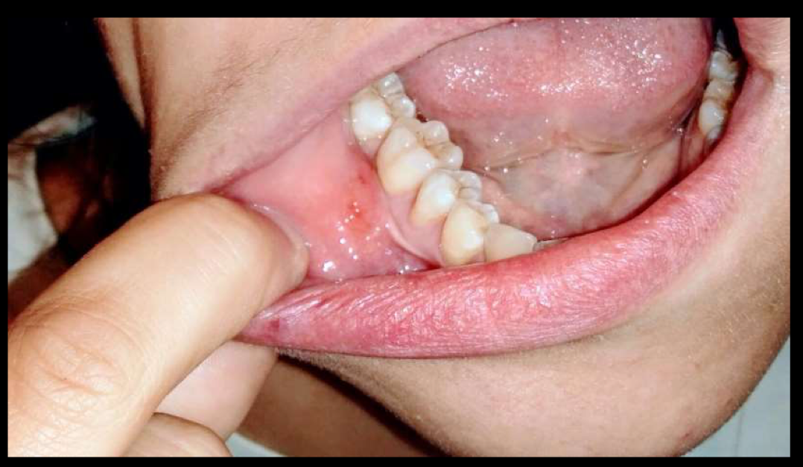
Factitious Disorder
- Intentional production of oral lesions (ulcers, periodontal destruction) for secondary gain
- Patients appear "strikingly inconspicuous" on psychiatric assessment
- Diagnosis clues: lesions inconsistent with stated history, failure to heal despite appropriate treatment
Primary, Secondary, and Tertiary Gain
| Type | Definition | Example | Nature |
|---|---|---|---|
| Primary Gain | Internal psychological benefit from a symptom | Patient develops paralysis or pain that prevents them from facing a stressful situation, unconsciously reducing anxiety | Unconscious. Patient is NOT aware their symptom serves a psychological function. |
| Secondary Gain | External benefits from having an illness or symptom | Patient with chronic pain receives disability payments or avoids unwanted duties | Mostly unconscious. If person exaggerates or fabricates intentionally, it's called malingering. |
| Tertiary Gain | A third party gains from the patient's symptoms | Family member gains control over decisions, or caregiver benefits from job security caring for chronically ill person | Can be conscious or unconscious, typically by third parties, not the patient. |
Refs: American Psychiatric Association (2022). DSM-5-TR. Sadock BJ et al. (2021). Kaplan & Sadock's Synopsis of Psychiatry. Gatchel RJ et al. (2007). Psychol Bull. 133(4): 581–624.
OCD and Body-Focused Repetitive Behaviors (BFRBs)
OCD with Contamination Obsessions
- Contamination obsessions → cleaning compulsions (most common OCD dimension)
- Oral manifestations: excessive toothbrushing, compulsive mouthwash use
- Severe: rinsing with bleach, rubbing alcohol, other caustic agents
- Results: chemical burns, mucosal ulceration, gingival recession
BFRBs & Compulsive Oral Hygiene
- DSM-5: lip biting, cheek chewing = "other specified OCD-related disorders"
- Lip-cheek biting affects ~8% of population at disorder level
- Overzealous toothbrushing → cervical abrasion, gingival recession, ulceration
- Patients persist despite pain due to mistaken health beliefs
- Often initiated in childhood during emotional turmoil
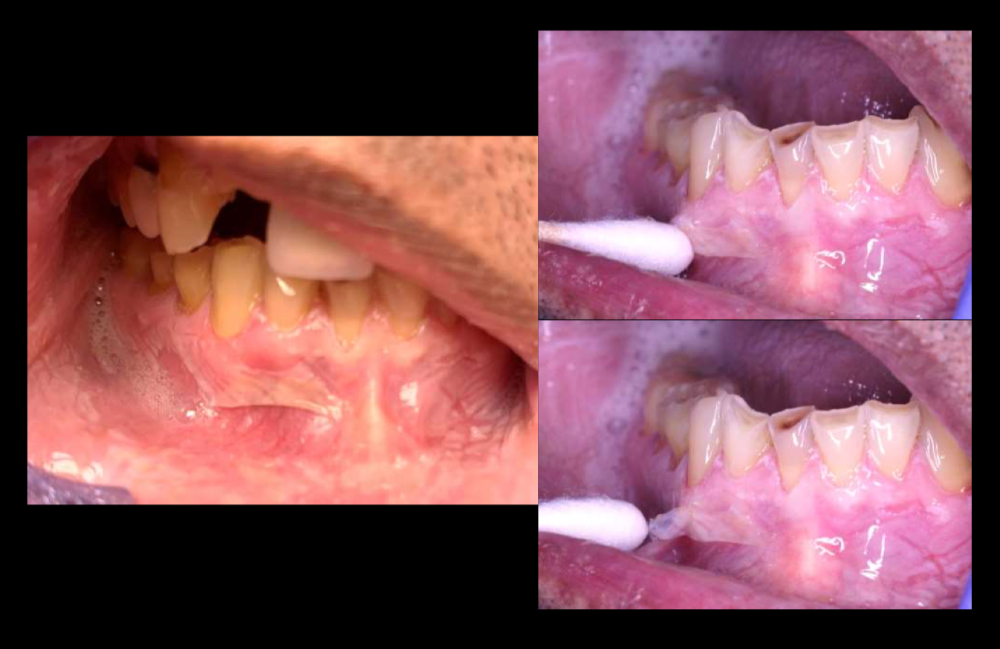
Refs: APA (2022). DSM-5-TR. Hoffman RS et al. (2020). N Engl J Med. 382(18): 1739–1748. Moritz S et al. (2023). JAMA Dermatol. 159(3): 281–289.
Exfoliative Cheilitis
Etiology: Factitious/Behavioral
- Significant association with lip licking/biting behavior
- 53% have parafunctional lip licking; 40% have psychiatric disorders
- Stress and psychiatric conditions associated with onset
Clinical Features
Cyclical nature:
Management
- Lanolin (lip barrier)
- Address underlying psychiatric comorbidity
- Behavioral modification to stop lip licking/biting/rubbing
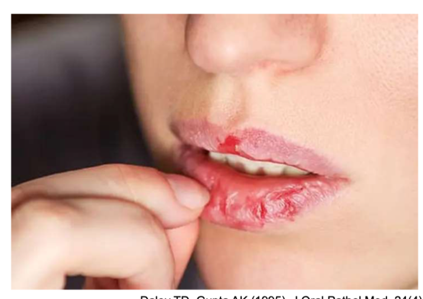
Refs: Daley TD, Gupta AK (1995). J Oral Pathol Med. 24(4): 177–179. Rogers RS, Bekic M (1997). Semin Cutan Med Surg. 16(4): 328–336. Blagec T et al. (2023). Oral Dis. 29(6): 2358–2366.
Management of Oral Self-Injury
Assessment First
- Thorough medical, developmental, and behavioral history
- Severity, frequency, aggravating/relieving factors, antecedents
- Rule out underlying pain source (dental, GI, infection)
Self-Injury Severity Spectrum
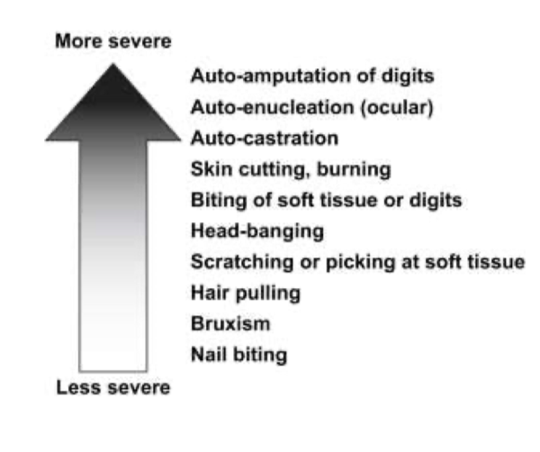
Nonpharmacologic Interventions
- Behavioral modification, desensitization
- Intraoral appliances (splints, mouth guards) — time-limited
- Tooth extraction — last resort only
Pharmacologic Options (limited evidence, time-limited use)
- Atypical antipsychotics (risperidone, aripiprazole)
- α-adrenergic agonists (clonidine, guanfacine)
- Botulinum toxin A for masticatory spasticity
Psychotherapy
- Psychology referral (especially for medically unexplained symptoms)
- Dialectical behavior therapy (DBT-A)
- Cognitive behavioral therapy (CBT)
- Habit replacement therapy (self-help RCT showed efficacy)
Refs: Iffland M et al. (2023). Cochrane Database Syst Rev. 2023(7): CD013700. Calvo N et al. (2022). Eur Neuropsychopharmacol. 59: 1–12. Witt KG et al. (2021). Cochrane Database Syst Rev. 2021(3): CD013667.
Management of Oral Self-Injury in Hospitalized Patients
- Intraoral appliances: Tongue stents, bite blocks, acrylic splints with headgear. Prevents discoordinate mandibular movements. Facilitates healing of existing lesions.
- Botulinum toxin A: Well-tolerated, safe, effective. Reduces spasticity, bruxism, and trauma.
- Surgical debridement: For established pyogenic granuloma or scar tissue. Excisional biopsy confirms diagnosis. No malignant potential for traumatic fibroma or pyogenic granuloma.
- Tooth extraction: Last resort when other measures fail.
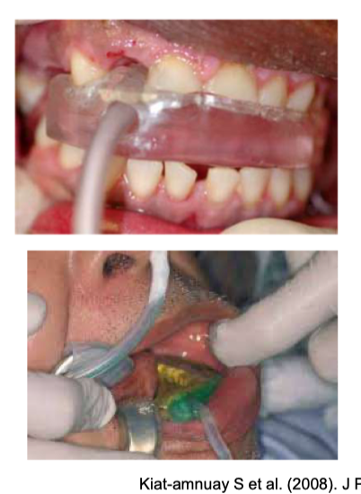
Refs: Kiat-amnuay S et al. (2008). J Prosthet Dent. 99(6): 421–424. Jack C, Skuba L, Zaparinuk D (2005). J Can Dent Assoc. 71(9): 661. Sarvas E et al. (2024). Pediatrics. 153(2): e2023065123.
Self-Test: Quiz Questions from Lecture
Quick Reference: Key Numbers & Doses
| Topic | Key Facts |
|---|---|
| BMS Demographics | 5F:1M, age 50–70, prevalence 1–3% |
| BMS Definition | >2 hrs/day, >3 months, no visible lesion |
| BMS Subtypes | Peripheral 50–65%, Central 20–40% |
| Topical Clonazepam | 0.5–1 mg, swish 3 min, spit, TID. GABA-A agonist. Best evidence. |
| ALA | 600 mg/day or 200 mg TID |
| Gabapentin | 300–3600 mg/day (start low, titrate) |
| Amitriptyline | 10–75 mg qhs |
| Dysgeusia: 95% Rule | ~95% of "taste" complaints are olfactory dysfunction |
| Zinc for Dysgeusia | Zinc sulfate 220 mg/day or zinc gluconate 50 mg/day |
| Normal Saliva Production | 0.5–1.5 L/day (unstim: 0.1 mL/min) |
| Sialorrhea: Secondary | ~90% of cases. Normal production, impaired clearance. |
| Glycopyrrolate | 1 mg TID (sialorrhea first-line) |
| PTTN Criteria | >3 months, within 6 months of injury, confirmed nerve lesion |
| MSG Dose | 750 mg per 150 g serving, TID |
| Olfactory Training | Rose, lemon, eucalyptus, clove. 2×/day × 3–6 months. |
| Anesthetic Challenge | Step 1: 20% benzocaine/5% lido, 5 min. Step 2: IAN block with 2% lido. |
| SIB in ASD | 26–50% prevalence, pooled 42%. Dental trauma RR 4.23. |
| Exfoliative Cheilitis | 53% parafunctional lip licking, 40% psychiatric disorders. Treat: lanolin. |